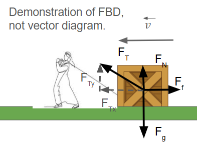

← Back to Work, Energy & Power
Work – Definition and Conceptual Understanding
In physics, **work** has a very specific meaning. Unlike the everyday use of the word, **work is only done when a force causes a displacement** in the direction of that force.
Formal Definition of Work
The work \( W \) done by a constant force \( \vec{F} \) on an object that undergoes a displacement \( \vec{d} \) is defined as:
$$ W = \vec{F} \cdot \vec{d} = Fd\cos\theta $$
Where:
- \( F \) is the magnitude of the applied force
- \( d \) is the displacement of the object
- \( \theta \) is the angle between the force vector and displacement vector
Understanding the Dot Product
The dot product \( \vec{F} \cdot \vec{d} \) captures how much of the force is **in the direction of displacement**. If the force is perpendicular to the motion (\( \theta = 90^\circ \)), no work is done!
Concept: A force only does work when it has a component in the direction of motion.

In this case, the x component of the tension force is doing work as well as the friction force. The normal force and gravitational force are NOT doing work because they are perpendicular to the object's velocity. The friction force would be doing negative work because it is opposing direction of motion (cos(180) = -1).
Units of Work
- Force is in newtons (N)
- Displacement is in meters (m)
- Work is in joules (J):
$$ 1 \, \text{J} = 1 \, \text{N} \cdot \text{m} $$
Signs of Work
- Positive Work: Force helps motion (e.g., pushing something forward).
- Negative Work: Force opposes motion (e.g., friction slowing something down).
- Zero Work: No displacement, or force is perpendicular (e.g., carrying a bag horizontally while gravity acts vertically).
Example Problem
Problem: A person pulls a sled with a 100 N force at an angle of 30° above the horizontal. The sled moves 20 meters forward. How much work is done?
Solution:
$$ W = Fd\cos\theta = (100)(20)\cos(30^\circ) = 2000 \cdot \frac{\sqrt{3}}{2} \approx 1732 \, \text{J} $$
Conceptual Questions
- Is work being done if you hold a weight still above your head?
- Can work be negative? What does that physically mean?
- Why does walking while holding a bag not count as work against gravity?
Calculus-Based Work (Preview)
For non-constant forces, we use an integral:
$$ W = \int \vec{F} \cdot d\vec{r} $$
You’ll see this more in later topics when we cover variable forces like springs or position-dependent electric forces.
Summary
Work measures energy transferred via force and displacement.
Direction matters — use dot product to project force onto motion.
The units of work are joules. Work can be positive, negative, or zero.